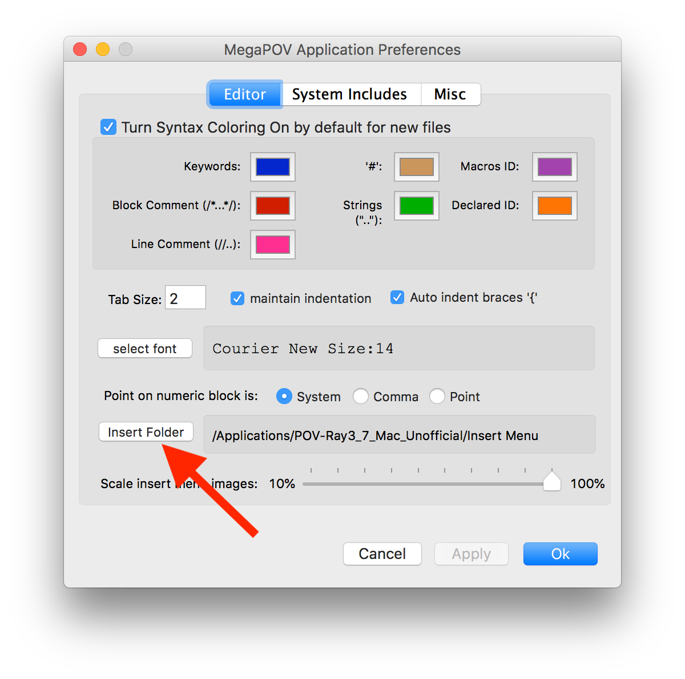
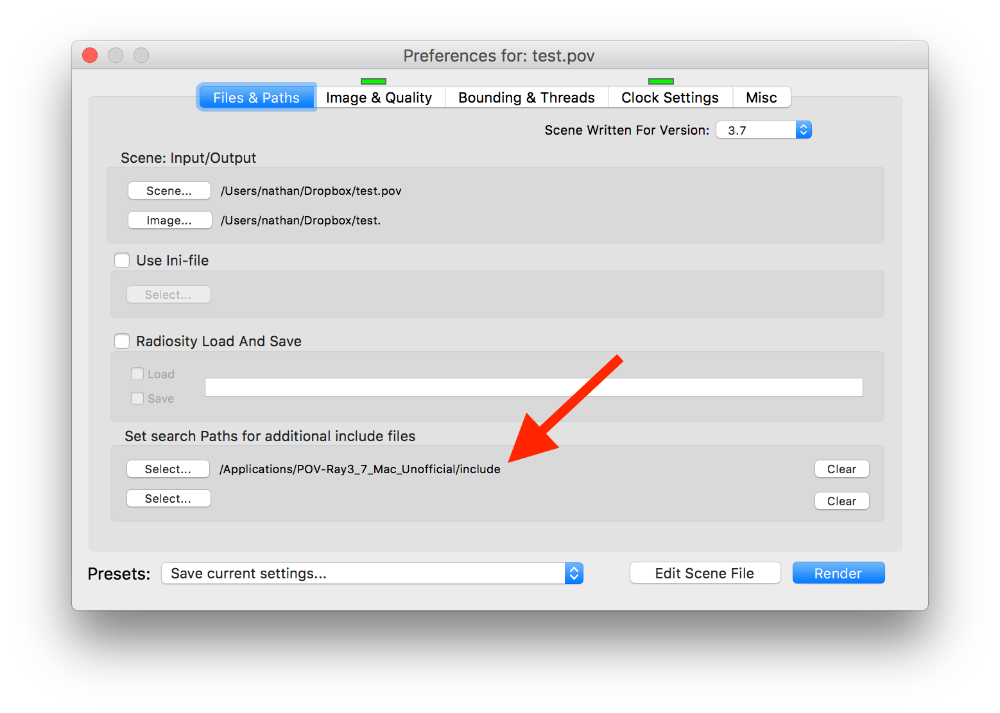
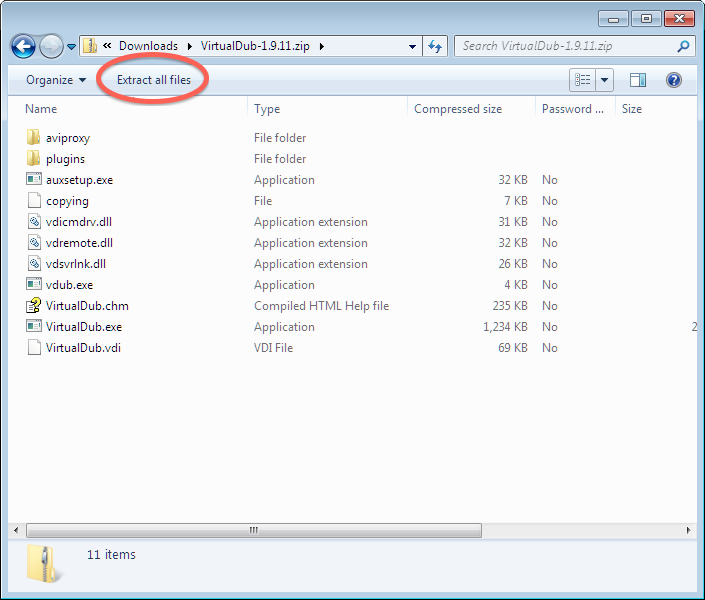
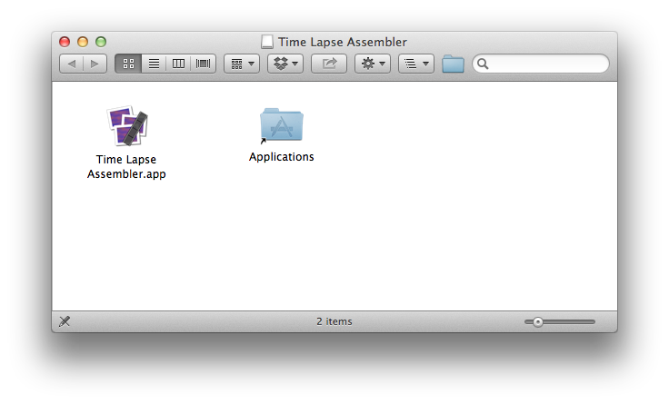

Software Packages
POV-Ray¶
The Persistence of Vision Raytracer can be obtained from its website. Or you can click this direct link to the installer for Microsoft Windows, on the download page from that same site.
Instructions for installing and using the software are provided in the textbook itself.
Note
The textbook recommends that Mac users install the Windows version in a virtual machine, or using Wine. But if you prefer a native user interface, even if it doesn't match the texbook's content, see the Unofficial POV-Ray GUI for Mac. Mac users may find it easier to get started with a copy of the Basic Scene 01 from the Windows version of POV-Ray.
Warning
For Mac users:
The text claims that the Mac version is inferior to the Windows version because the Windows version has a powerful Insert menu with many ready-made shapes and scenes available for easy construction of scenes and objects.
But a helpful reader informed me that POV-Ray Unofficial 3.7.0.x for Mac contains the Insert menu, if you set your preferences correctly. (Thanks, Matthias!)
Do so as follows:
- Launch the POV-Ray Unofficial 3.7.0.x application.
- Click the POV-Ray menu and choose Preferences.
- In the Editor tab, click the Insert Folder button as shown here. 
- Navigate to the
/Applicationsfolder, and then into thePOV-Ray Unofficial 3.7.0.xfolder, and then into theInsert Menufolder. - Click Open.
- Click Ok to save your preferences.
The Insert menu should then be visible. However, content you insert
into your scenes using that menu may depend on .inc files that POV
needs to be able to locate. Thus you must also modify your render
settings as follows.
- Ensure the Render Settings window is visible (see the Window menu, Render settings).
- In the "Files & Paths" section, notice the section on search paths for include files, highlighted in the following screenshot. 
- Click the Select button to choose an include path.
- Navigate to the
/Applicationsfolder, and then into thePOV-Ray Unofficial 3.7.0.xfolder, and then into theincludefolder. - Click Open.
Then any file you create using content from the Insert menu should render successfully.
VirtualDub for Windows¶
This software package creates videos from sequences of still frames created in POV-Ray. You can visit its website, or go directly to downloading a version for your Windows computer. Instructions for installing the software appear below; instructions for using it are provided in the textbook itself.
- Download the software using one of the links above.
- Open the file you download, which is a
.ziparchive. - In the window that opens, click the button labeled "Extract all files," as shown in the screenshot below.
- Choose any folder on your hard drive where you wish to keep this program. One sensible place is to put it is in the same folder on your hard drive where you keep all your POV files.

Tip
You do not need to download or install the software more than once;
this is a one-time-only procedure. To run the program (now or at any
future time) use Windows Explorer to navigate to the folder you chose
and double-click the file VirtualDub.exe.
To make a shortcut for VirtualDub on your desktop, right-click the .exe
file and choose "Copy," then right-click on your desktop and choose to paste
a shortcut.
Time Lapse Assembler for Mac OS X¶
Download and install this application as follows.
- First download the application from the developer's
website.
It downloads as a disk image (
.dmg) file, which your system probably placed in your Downloads folder. - Find that file and double-click it to mount and open it in Finder. This will show you the contents of the disk image, which is just the app itself and a link to your Applications folder, as shown in the screenshot below.
- Click and drag the application into your Applications folder. This installs the app on your system.
- You can then close the disk image window, find the disk image on your desktop, and drag it to the Trash to unmount it.

Tip
You need to follow this installation procedure only once. Now that the software is installed on your computer, to launch it, simply navigate to your Applications folder (which appears in the Dock, for many users) and double-click Time Lapse Assembler.
Mac users will need to ensure that all frames of an animation are in JPEG format. To do so, see the Mac OS X Service I provide for that purpose, which you can download from the "first animations" page.
ffmpeg for Linux¶
Visit the ffmpeg website and follow the download and installation instructions for binaries for your type of Linux distribution.